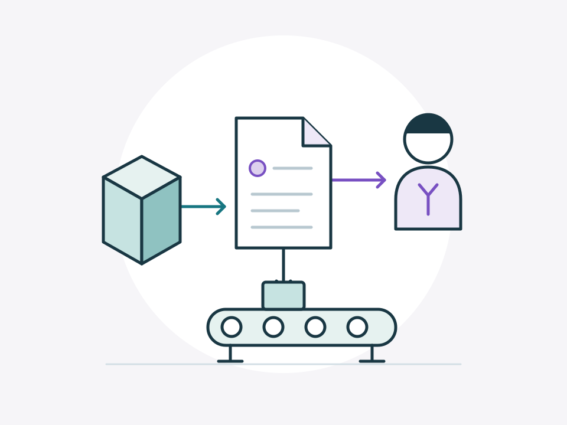
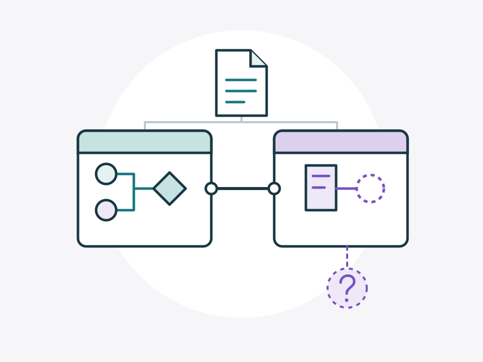

Platform / The concepts behind Decision Lab
Make the parts manageable.
Keep the connections.
A decision can be larger than any one person can hold in mind. These concepts guide how we give its parts a shared meaning, reason about them together, and learn from what happens.
Decision Lab combines reusable decision patterns, explicit domain models, and patent-pending reasoning algorithms to help teams examine evidence, compare arrangements, and understand what needs to happen next.
Start with the overview Ways of Thinking About Human Decisions
01 / Manageable parts
Hierarchical
decomposition.

Examine a manageable part, then bring it back into the larger decision.
We divide a complex question into components that people can examine, then integrate what those components establish. A useful abstraction preserves the meanings, conditions, and evidence that affect how its result can be used.
Technical qualification, production capacity, and purchasing authority can be examined separately. A trial and a customer order may still need the same production line. Keeping that dependency visible lets us check the combined demands when the parts come together.
Read the full article Hierarchical Decomposition for Human Decisions02 / Shared structure
Convention based
modeling.

Make deliberate choices about how a decision is described.
We favor defined concepts and relationships, reusable pieces of reasoning, and clear conditions for accepting a conclusion. Following a shared structure gives people a consistent way to describe the work and gives software a basis for checking it.
The model takes effort to make explicit. The return is reasoning that can be examined, combined, and reused. The goals and acceptable tradeoffs remain with the people responsible for the decision.
Read the full article Shared Structure for Automated Reasoning03 / Meaning and relationships
Ontology
engineering.

Preserve the distinctions a decision depends on.
An ontology defines the kinds of things a model recognizes and the relationships between them. Ontology engineering is the work of choosing, checking, and maintaining those meanings as our understanding changes.
A trial, its report, a technical finding, and permission to purchase play different roles. Keeping them distinct lets people follow the reasoning from evidence to action. A technical approval retains its scope when another team uses it.
In the shipment case. In Maya’s shipment review, the expense limit, available cash, and permission to spend are separate conditions. Having enough cash does not establish who may authorize the shipment. Keeping those meanings distinct helps the team review what the proposed movement actually requires. See the shipment’s requirements.
Read the full article Ontology Engineering for Human Decisions04 / Manageable questions
Reasoning
modules.

Work on one question without losing what its answer means.
A reasoning module gathers the concepts, claims, rules, and conditions relevant to a question. It gives someone a manageable part of the work to examine and a conclusion that can contribute to a larger decision.
Technical qualification and purchasing authority can be separate modules within a supplier decision. Each makes clear what it establishes, what it depends on, and what remains unresolved. Reuse carries those conditions forward.
Read the full article Reasoning Modules for Human Decisions05 / Connected approaches
Pattern
languages.

Reuse an approach while keeping its context in view.
A pattern describes a reusable solution to a recurring problem, preserving its context, conditions, and rationale. A pattern language connects these solutions so people can combine and adapt them to the particulars of their work.
Independent review is one such pattern: separate preparation from review, identify qualified people, and connect the finding to its evidence. It connects to patterns for authority and shared resources. Phrase patterns provide a readable way to express those relationships within the language.
We put these approaches to work through reusable apps and stitch them into workflows. An evidence review can feed a feasibility check, whose findings then support a learning decision. Shared meanings and reviewed handoffs connect those parts to the purpose of the whole.
In the shipment case. Maya’s shipment review reuses a simple approach: check complete combinations against the requirements, then compare those that pass. Two apps use the same shipment facts and checks while applying different priorities: lowest expense or earliest arrival. The team can adapt that approach for another shipment without starting its reasoning from scratch. Compare the two shipment priorities.
Read the full article Pattern Languages for Human Decisions06 / Language and interpretation
Computational
hermeneutics.
Make interpretation explicit enough to examine.
Compare plausible readings of a statement, inspect what each would imply, and ask for clarification where the difference affects the work. Record the answer with its source and conditions, revise the representation, and revisit the conclusions that depend on it.
“We can run the trial on Friday” could express expected line availability, a reservation, permission, or several claims together. Clarification helps identify the claim being made. Evidence and the relevant authority still need examination before that claim can support a decision.
Our approach draws on computational hermeneutics: examining how context shapes meaning. The article below follows a manual worked exchange and the engineering analogies behind it. For a practical starting point in the current beta, check a report plan.
Read the full article Computational Hermeneutics for Human Decisions07 / Conditions for acceptance
Requirements
engineering.

State what an acceptable result must satisfy.
Requirements turn needs, constraints, and standards into conditions we can examine together. They give us a basis for checking whether a proposed combination of choices works and for seeing where a tradeoff arises.
A supplier change might require a qualifying trial, preserved customer deliveries, and spending authorization. A lower price may depend on a trial that cannot happen in time. Making those conditions explicit shows what would have to change.
Read the full article Requirements Engineering for Human Decisions08 / The purpose of the whole
Systems
engineering.

Examine how the parts work together toward a purpose.
Systems engineering connects needs and requirements to how parts are designed, combined, tested, and used. It asks us to consider the interactions across people, equipment, procedures, and the wider operation.
A cheaper material could create more inspection work or slow production. We examine those consequences across the relevant boundaries and check whether the combined result serves the need that prompted the decision.
Read the full article Systems Engineering for Human Decisions09 / Learning from results
Feedback
loops.

Connect what happens to the next decision.
We form a model, choose, act, observe, and compare the results with what we expected. Those observations can change an assumption, a method, or the requirements themselves. Keeping the original reasoning available makes that comparison possible.
If material passes its trial but slows regular production, the team can revisit the savings estimate. We ask what to observe, who will review it, and which findings should trigger reconsideration. We also examine loops within the work, such as rework creating pressure that produces more defects.
Read the full article Feedback Loops for Human Decisions10 / Bringing the parts together
The arrangement
problem.

Ask whether the whole combination can satisfy its requirements.
A plan describes what we intend to do. An arrangement represents the possible combinations of work, people, resources, permissions, and dependencies allowed by the rules and context. As work progresses and conditions change, the workable combinations can change too.
Three activities may each need three hours on a line with eight hours available. Every pair fits; all three do not. Checking the full arrangement reveals the shared constraint. Changes to availability can change which arrangements work. Any result remains bounded by the modeled choices and assumptions, with outstanding obligations kept visible.
In the shipment case. Maya’s direct and backup shipment options combine a ship point, timing, people, resources, and permissions. Both pass with a $6,500 expense limit. Lowering it to $5,000 rules out the $6,000 backup while leaving the $4,000 direct option available. Changing one condition changes the collection of workable combinations. See the expense-limit example.
Read the full article The Arrangement Problem in Human Decisions